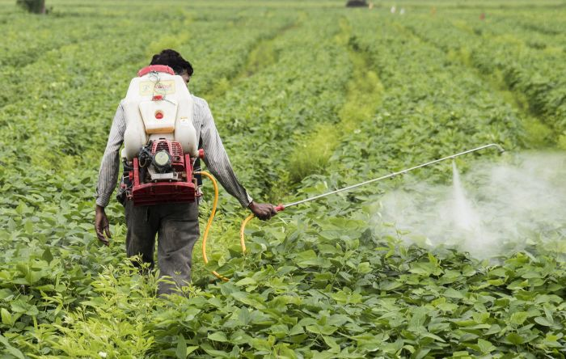
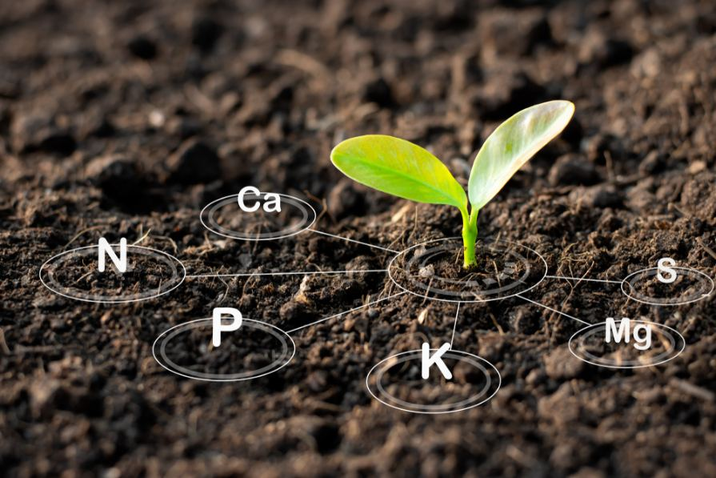
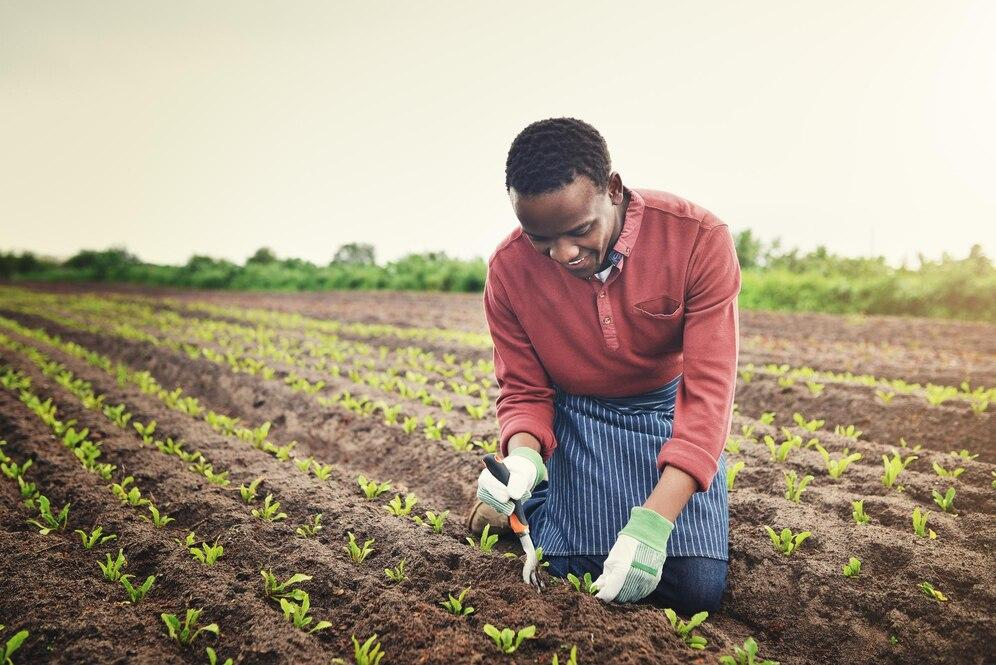
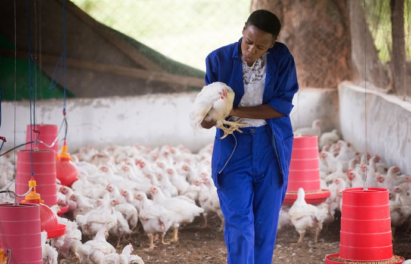
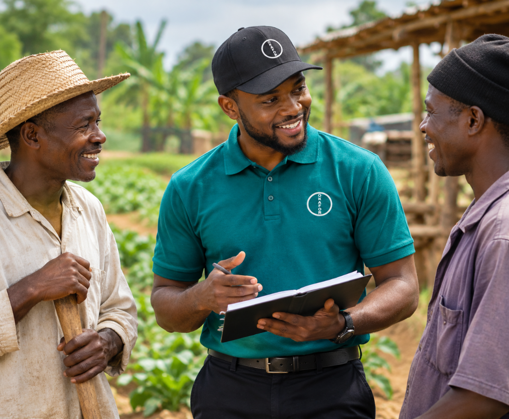

ABOUT AGRISCIENCE
Helping farmers
grow with confidence.
Okafor Agriscience supports farmers with products and solutions for crop protection, plant nutrition, seeds and animal health.
Our focus is practical: helping farmers find suitable agricultural inputs for their crops and livestock, with support for the needs of different farming operations.
OUR FOCUS AREAS
Explore Agriscience.
Explore our four areas of focus and find solutions suited to your farming needs.

Crop Protection
Solutions to help farmers manage weeds, pests and crop diseases throughout the growing season.
Explore Crop Protection
Plant Nutrition
Fertilizers and plant nutrition products to support healthy growth and crop development.
Explore Plant Nutrition
Seeds
Seed options for farmers growing vegetables and field crops, selected for different farming needs.
Explore Seeds
Animal Health
Products and solutions to support poultry and pig health as part of responsible livestock management.
Explore Animal Health
OUR APPROACH
Practical solutions
for everyday farming.
Every farm has its own needs. Crop type, soil, weather, livestock and farming methods all influence the products farmers require.
We aim to make relevant agricultural inputs easier to find and help farmers explore the options available for their farming operations.
Explore our businessesEXPLORE OUR OFFERINGS
Find the right products
for your farm.
Visit our Agriscience product site to explore our available agricultural products and solutions.